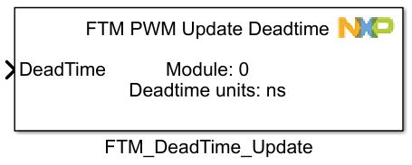
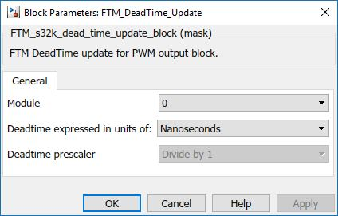

PWM Deadtime Update Block
The functionality of the block is to update the PWM Deadtime for FTM during runtime.
Block Image
Inputs:
- Deadtime (uint32)
Outputs:
- None
Parameters and Dialog Box
Module
Select which FTM module to use.
- Range: 0 – FTMn
Deadtime expressed in units of
Selects the units in which FTM will update the deadtime.
- Ticks
- Nanoseconds
Prescaler - only for Ticks
Selects the prescaler of the deadtime - only for the Ticks. For nanoseconts, will be computed autocmaticaly.
- 1
- 4
- 16
Block Dependency
Before using this block add a FTM PWM Config Block that needs to be configured in Combine mode, or for Edge/Center Aligned mode, at least one channel pair must be set as Complementary.
Block Miscellaneous Details:
- None.